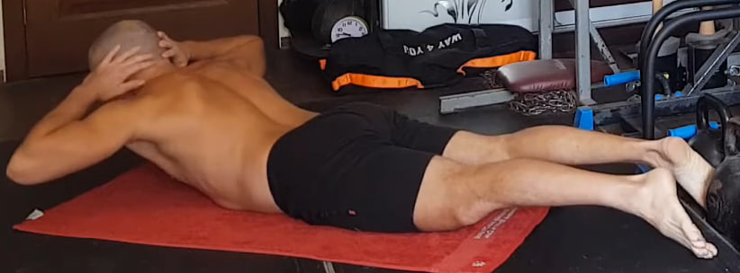
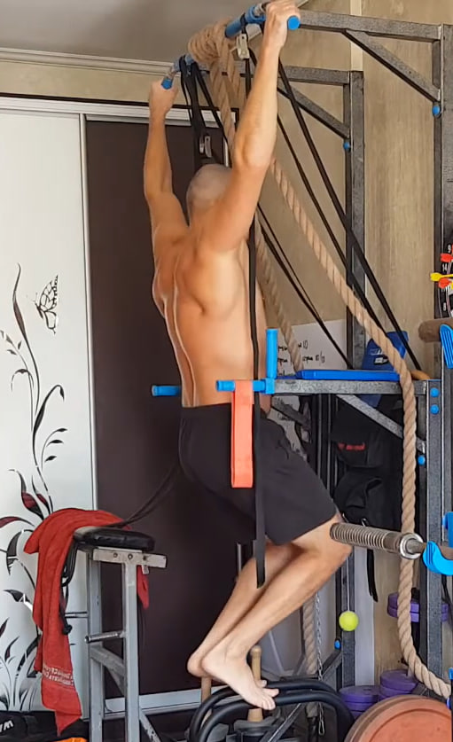
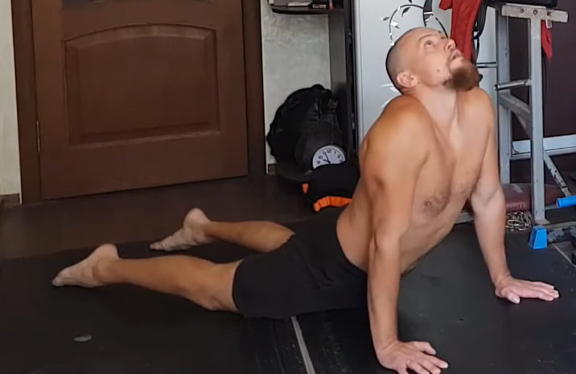
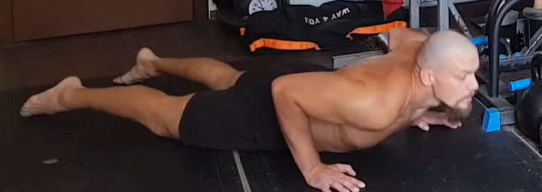

Día 4: cardio y capacidad pulmonar + core (abdomen y zona media) (sin equipo)
Hoy trabajamos cardio y capacidad pulmonar, core (abdomen y zona media), isometría y control con ejercicios simples que caben en una habitación. El objetivo es construir fuerza útil, resistencia y control corporal con el mínimo de equipo.
Prioriza la técnica, respira con control y acumula consistencia: incluso una sesión corta suma cuando la repites día tras día.
1. Saltos en posición de plancha
Antes de empezar: haz el calentamiento y repasa la respiración. (No lo saltes.)


Desde la posición de plancha, salta llevando los pies hacia adelante, debajo del pecho, y luego vuelve a la plancha con otro salto. Mantén el abdomen firme y la cadera estable para que la zona lumbar no se hunda. Haz 10 repeticiones rápidas pero controladas.
2. “Barco” isométrico para la espalda
Antes de empezar: haz el calentamiento y repasa la respiración. (No lo saltes.)
Protocolo isométrico: tensión 10 s + descanso 5 s × 10 repeticiones (por lado, si aplica). Respira 3‑3‑3 durante la tensión (inhalar 3 s, retener 3 s, exhalar 3 s) y usa 3‑6‑3 entre series para recuperar. Más detalles: Respiración.

Acuéstate boca abajo con las piernas estiradas y las manos detrás de la cabeza. Desde esta posición, eleva el pecho, los codos y la parte superior del torso lo más alto posible, creando una tensión fuerte en toda la espalda. Mantén las piernas extendidas y el abdomen activo. Repite 10 veces.
3. Colgamientos parciales con apoyo en los pies
Antes de empezar: haz el calentamiento y repasa la respiración. (No lo saltes.)

Agarra una barra o cualquier soporte sólido que no pueda romperse. No cuelgues todo tu peso como en una dominada: deja parte del peso sobre los pies para mantener un estiramiento seguro y controlado. Relaja los hombros y permite que la columna se alargue de forma natural; si es posible, inclina ligeramente la pelvis hacia adelante para mejorar la descompresión de la espalda. Mantén la posición durante 10 segundos y repite 10 veces.
4. Peso muerto isométrico “bloqueado”
Antes de empezar: haz el calentamiento y repasa la respiración. (No lo saltes.)
Protocolo isométrico: tensión 10 s + descanso 5 s × 10 repeticiones (por lado, si aplica). Respira 3‑3‑3 durante la tensión (inhalar 3 s, retener 3 s, exhalar 3 s) y usa 3‑6‑3 entre series para recuperar. Más detalles: Respiración.

Colócate de pie con los pies al ancho de los hombros e inclina el torso hacia adelante manteniendo la espalda firme y recta. Sujeta con las manos las rodillas o la parte superior de las piernas, creando un punto de anclaje que bloquea el movimiento. Desde ahí intenta levantar el torso como en un peso muerto real, pero las manos no permiten que el cuerpo suba, generando una tensión muy fuerte en la espalda baja, glúteos y cadena posterior.
5. Saltos estrella desde sentadilla
Antes de empezar: haz el calentamiento y repasa la respiración. (No lo saltes.)
Seguridad en sentadillas: mantén los talones apoyados y el peso en el medio del pie. Las rodillas deben seguir la dirección de los dedos (sin colapsar hacia adentro). Si eres principiante o sientes molestias, evita que las rodillas se adelanten demasiado y piensa en “caderas atrás” para proteger la articulación.


Parte desde una sentadilla profunda con las manos cerca del suelo. Desde la parte baja, realiza un salto explosivo hacia arriba abriendo brazos y piernas en forma de estrella. Aterriza suave, vuelve inmediatamente a la sentadilla profunda y repite. Completa 10 repeticiones seguidas manteniendo un ritmo elástico y continuo.
6. Estiramiento hacia el suelo
Antes de empezar: haz el calentamiento y repasa la respiración. (No lo saltes.)
Protocolo isométrico: tensión 10 s + descanso 5 s × 10 repeticiones (por lado, si aplica). Respira 3‑3‑3 durante la tensión (inhalar 3 s, retener 3 s, exhalar 3 s) y usa 3‑6‑3 entre series para recuperar. Más detalles: Respiración.

Colócate de pie con las piernas completamente rectas y los pies al ancho de las caderas. Inclina el torso hacia adelante intentando llevar las manos al suelo. No te limites a doblarte desde la cintura: empuja la pelvis hacia atrás todo lo posible para crear un estiramiento profundo en los isquiotibiales y la cadena posterior. No flexiones las rodillas, deja caer el peso del torso y respira de forma tranquila.
7. “Gato” dinámico para la columna
Antes de empezar: haz el calentamiento y repasa la respiración. (No lo saltes.)


Acuéstate boca abajo con las manos a los lados del pecho. Empuja el suelo y eleva el torso hacia arriba, estirando la parte frontal del cuerpo y arqueando la espalda como en la postura de la cobra. La mirada se dirige ligeramente hacia arriba sin tensar el cuello. Después desciende con control, acercando el pecho al suelo sin perder la tensión del cuerpo. El movimiento debe ser suave y continuo, evitando que la zona lumbar colapse. Mantén el abdomen firme y realiza 10 repeticiones con un movimiento suave y continuo.
8. Saltos en posición de plancha
Antes de empezar: haz el calentamiento y repasa la respiración. (No lo saltes.)


Repite el mismo ejercicio de saltos en plancha: desde la posición de plancha, salta llevando los pies hacia adelante debajo del pecho y vuelve atrás con otro salto. Mantén el abdomen tenso y la cadera estable en todo momento. Realiza 10 repeticiones rápidas pero siempre controladas.
Cierre
Experimenta: ajusta ángulos, rango y puntos de tensión hasta encontrar la versión que te sienta bien. Lo importante es que el entrenamiento sea sostenible y te dé ganas de volver. Crea condiciones para entrenar con regularidad, aunque sea poco: 10 minutos cuentan. Esta rutina está pensada para eso: que puedas cumplir incluso con poco espacio, poco tiempo y circunstancias difíciles.